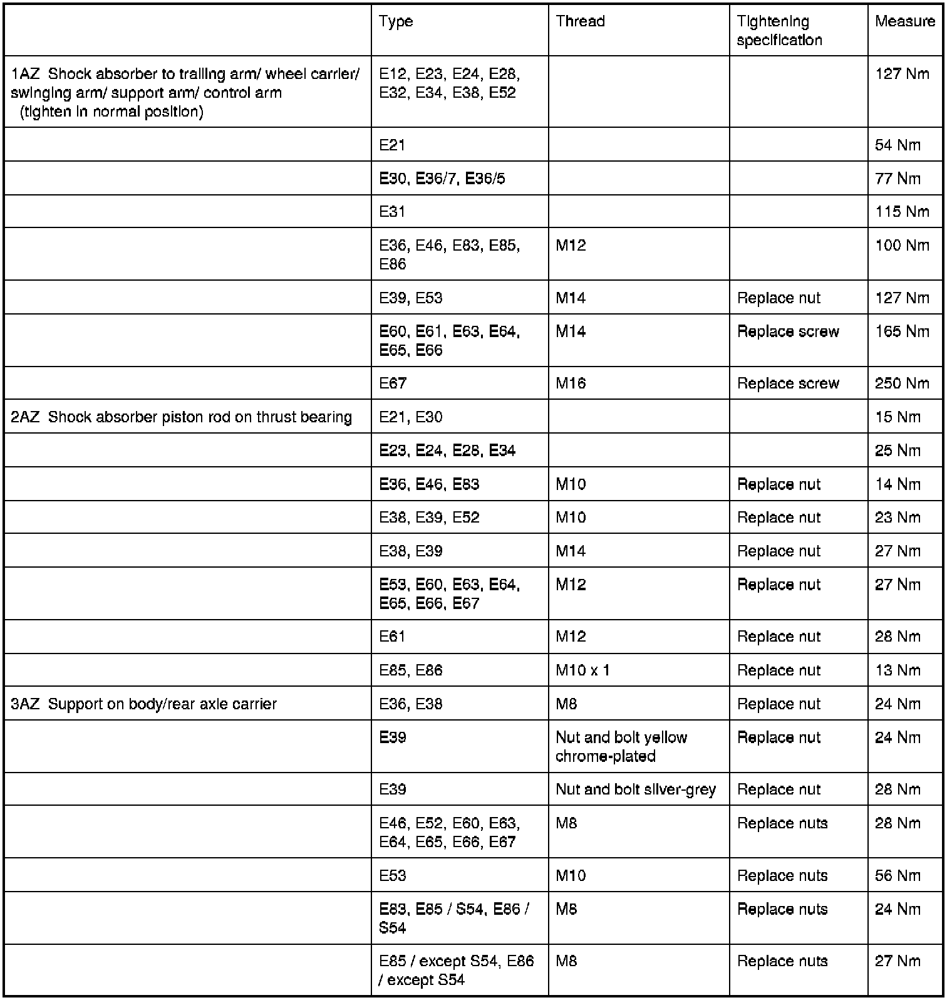

Operation CHARM
: Car repair manuals for everyone.
Home
>>
BMW
>>
2007
>>
X3 3.0si (E83) L6-3.0L (N52K)
>>
Repair and Diagnosis
>>
Steering and Suspension
>>
Suspension
>>
Suspension Strut / Shock Absorber
>>
Specifications
>>
Shock Absorbers (Rear)
Shock Absorbers (Rear)
33 52 Shock Absorbers
